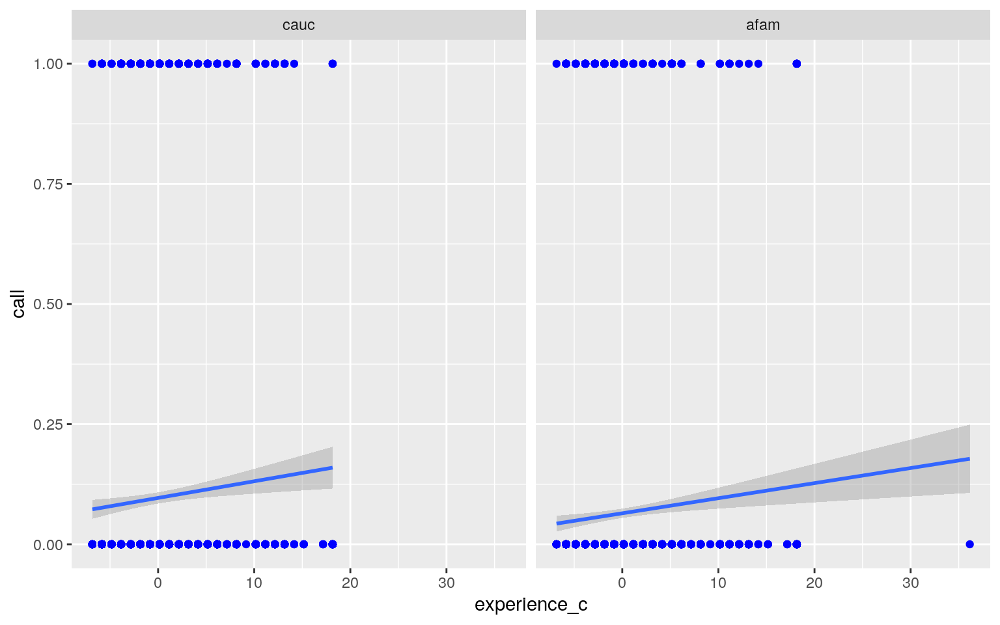

In this project, I will be looking at the dataset ResumeNames in order to determine if different variables will affect you receiving a call back from a job you applied to. I chose this dataset because it deals with racism in the workplace; I wanted to answer whether one's ethnicity had an impact on them getting a job and by how much. Although the original dataset has 27 different variables, I decided to select 12 of the ones I think have the greatest effect in order to fit the rubric guidelines. The outcome variable is call which is whether the applicant received a call back from the workplace. Some of the main response variables are the gender of the applicant, the ethnicity of their first name (whether it sounds Caucasian or African American), the quality of their resume, the number of jobs they had listed, their years of work experience, the position the employer wanted, the industry the job they applied to was in, and if the applicant had a college degree. There are 4870 observations in total.
library(AER)
data("ResumeNames")
resume <- ResumeNames
resume <- resume %>% select(gender, ethnicity, quality, call,
jobs, experience, honors, volunteer, equal, college, industry,
wanted)
resume <- resume %>% mutate(call = ifelse(call == "yes", 1, 0),
gender = ifelse(gender == "male", 1, 0), honors = ifelse(honors ==
"yes", 1, 0), volunteer = ifelse(volunteer == "yes",
1, 0), equal = ifelse(equal == "yes", 1, 0), college = ifelse(college ==
"yes", 1, 0))
glimpse(resume)## Rows: 4,870
## Columns: 12
## $ gender <dbl> 0, 0, 0, 0, 0, 1, 0, 0, 0, 1, 0, 0, 0, 0,
0, 1, 1, 0, 0, 0, 1, 1, 0, 0, 1, 0, …
## $ ethnicity <fct> cauc, cauc, afam, afam, cauc, cauc,
cauc, afam, afam, afam, afam, cauc, afam, …
## $ quality <fct> low, high, low, high, high, low, high,
high, low, high, high, high, low, low, …
## $ call <dbl> 0, 0, 0, 0, 0, 0, 0, 0, 0, 0, 0, 0, 0, 0,
0, 0, 0, 0, 0, 0, 0, 0, 0, 0, 0, 0, …
## $ jobs <int> 2, 3, 1, 4, 3, 2, 2, 4, 3, 2, 4, 4, 4, 2,
2, 3, 3, 3, 2, 2, 3, 3, 2, 3, 3, 4, …
## $ experience <int> 6, 6, 6, 6, 22, 6, 5, 21, 3, 6, 8, 8,
4, 4, 5, 4, 5, 6, 6, 8, 4, 3, 2, 7, 3, 6…
## $ honors <dbl> 0, 0, 0, 0, 0, 1, 0, 0, 0, 0, 0, 0, 0, 0,
0, 0, 0, 0, 1, 0, 0, 0, 0, 0, 0, 0, …
## $ volunteer <dbl> 0, 1, 0, 1, 0, 0, 1, 1, 0, 1, 1, 0, 0,
0, 1, 0, 1, 0, 1, 0, 1, 0, 0, 0, 1, 0, …
## $ equal <dbl> 1, 1, 1, 1, 1, 1, 1, 1, 1, 1, 1, 1, 1, 1,
1, 1, 1, 1, 0, 0, 0, 0, 0, 0, 0, 0, …
## $ college <dbl> 1, 0, 1, 0, 0, 1, 1, 0, 1, 1, 1, 1, 1,
1, 1, 0, 1, 1, 1, 0, 1, 1, 0, 1, 1, 1, …
## $ industry <fct> manufacturing, manufacturing,
manufacturing, manufacturing, health/education/s…
## $ wanted <fct> supervisor, supervisor, supervisor,
supervisor, secretary, other, other, secre…In this section, I performed a MANOVA test to determine if the 2 numeric variables, jobs and experience show a mean difference across gender. The p-value was lower than 0.05 so I could safely reject the null hypothesis that the mean differences for both DVs were equal.
man1 <- manova(cbind(jobs, experience) ~ gender, data = resume)
summary(man1)## Df Pillai approx F num Df den Df Pr(>F)
## gender 1 0.012135 29.892 2 4867 1.25e-13 ***
## Residuals 4868
## ---
## Signif. codes: 0 '***' 0.001 '**' 0.01 '*' 0.05 '.' 0.1
' ' 1I performed the univariate ANOVAs to determine the responses that show the mean differences among the group. In this case, both are significant! So, for jobs and experience, at least one gender differs. Then, the post-hoc t tests are performed to find which groups differed. This is shown below. Note: The genders were dummy coded earlier in which "male" was 1 and "female" was 0.
summary.aov(man1)## Response jobs :
## Df Sum Sq Mean Sq F value Pr(>F)
## gender 1 59.4 59.385 40.278 2.403e-10 ***
## Residuals 4868 7177.3 1.474
## ---
## Signif. codes: 0 '***' 0.001 '**' 0.01 '*' 0.05 '.' 0.1
' ' 1
##
## Response experience :
## Df Sum Sq Mean Sq F value Pr(>F)
## gender 1 143 142.853 5.6188 0.01781 *
## Residuals 4868 123764 25.424
## ---
## Signif. codes: 0 '***' 0.001 '**' 0.01 '*' 0.05 '.' 0.1
' ' 1resume %>% group_by(gender) %>% summarize(mean(jobs), mean(experience))## # A tibble: 2 x 3
## gender `mean(jobs)` `mean(experience)`
## <dbl> <dbl> <dbl>
## 1 0 3.60 7.94
## 2 1 3.86 7.53pairwise.t.test(resume$jobs, resume$gender, p.adj = "none")##
## Pairwise comparisons using t tests with pooled SD
##
## data: resume$jobs and resume$gender
##
## 0
## 1 2.4e-10
##
## P value adjustment method: nonepairwise.t.test(resume$experience, resume$gender, p.adj = "none")##
## Pairwise comparisons using t tests with pooled SD
##
## data: resume$experience and resume$gender
##
## 0
## 1 0.018
##
## P value adjustment method: noneI performed 1 MANOVA, 2 ANOVAs, and 2 t tests for a total of 5 tests. So, I calculated the probability of at least one type I error to be 22.62%, and adjusted the significance level accordingly using the bonferroni correction. Therefore, both genders were found to differ significantly from each other in terms of jobs, but not for experience, after adjusting for multiple comparisons. The p-value for experience was 0.018 which was greater than the bonferroni correction for alpha.
1 - (0.95^5) #probability of a type I error## [1] 0.22621910.05/5 #bonferroni correction## [1] 0.01In this section, I tested MANOVA assumptions to determine if they have been met. The assumption of multivariate normality was violated, so I had to test for homogeneity of covariance matrices. This assumption was met. Then, I added the covariance matrices for both genders.
library(rstatix)
group <- resume$gender
DVs <- resume %>% select(jobs, experience)
sapply(split(DVs, group), mshapiro_test) #multivariate normality## 0 1
## statistic 0.8503846 0.7733284
## p.value 9.103839e-51 8.99406e-37box_m(DVs, group) #box's M test## # A tibble: 1 x 4
## statistic p.value parameter method
## <dbl> <dbl> <dbl> <chr>
## 1 9.62 0.0221 3 Box's M-test for Homogeneity of
Covariance Matriceslapply(split(DVs, group), cov) #covariance matrices## $`0`
## jobs experience
## jobs 1.447358 1.633489
## experience 1.633489 24.982111
##
## $`1`
## jobs experience
## jobs 1.56447 2.30869
## experience 2.30869 26.89757Here, I performed a chi-squared randomization test on ethnicity and call to see the association between what ethnicity a person's first name sounds like (either Caucasian or African American) and whether they received a call back from the workplace they applied to. Note: The call variable has been dummy coded in which "yes' is 1 and "no" is 0.
I ran the code for the chi-squared test. The null hypothesis is that the ethnicity of one's name and the call back from the job they applied to are independent. The alternative hypotheses is that the ethnicity of one's name and the call back from the job they applied to are not independent. This data provided evidence that the call back from the job the applicant applied to differed between the two ethnicity levels (χ2 = 16.879, df = 1, p = 3.984e-05).
resume_table <- table(resume$ethnicity, resume$call)
resume_table #contingency table##
## 0 1
## cauc 2200 235
## afam 2278 157chisq.test(resume_table, correct = F)##
## Pearson's Chi-squared test
##
## data: resume_table
## X-squared = 16.879, df = 1, p-value = 3.984e-05Now, I created a plot to see the null distribution and the test statistic.
X2 <- vector()
for (i in 1:10000) {
samp <- sample(factor(resume_table), 100, replace = T)
obs <- table(samp)
exp <- c(50, 50)
X2[i] <- sum((obs - exp)^2/exp)
}
proportion <- table(X2[i])/sum(table(X2[i]))
resume %>% ggplot(aes(ethnicity, call)) + geom_bar(stat = "identity") +
ylab("Proportion under H0") + geom_text(aes(label = round(X2[i],
3), vjust = -0.5), color = "white")Here, I built a linear regression model predicting the call from ethnicity and experience_c. The code and the coefficient interpretations are listed below.
The mean/predicted call for Caucasian sounding names with an average amount of experience listed on their resume is 0.0964630. Applicants with African American sounding names with an average years of experience had a predicted call that was 0.0319447 lower than applicants with Caucasian sounding names with an average years of experience. For every 1-unit increase in average experience, predicted call backs goes up 0.0034682. Lastly, the slope of average experience for applicants with African American sounding names is 0.0003304 lower than applicants with Caucasian sounding names. This model explained 0.7231% of the variation in the outcome variable.
resume_ln <- resume
resume_ln$jobs_c <- resume$jobs - mean(resume$jobs, na.rm = T)
resume_ln$experience_c <- resume$experience - mean(resume$experience,
na.rm = T)
fit <- lm(call ~ ethnicity * experience_c, data = resume_ln)
summary(fit)##
## Call:
## lm(formula = call ~ ethnicity * experience_c, data =
resume_ln)
##
## Residuals:
## Min 1Q Median 3Q Max
## -0.17797 -0.09011 -0.07620 -0.05874 0.95695
##
## Coefficients:
## Estimate Std. Error t value Pr(>|t|)
## (Intercept) 0.0964630 0.0054955 17.553 < 2e-16 ***
## ethnicityafam -0.0319447 0.0077719 -4.110 4.02e-05 ***
## experience_c 0.0034682 0.0010822 3.205 0.00136 **
## ethnicityafam:experience_c -0.0003304 0.0015409 -0.214
0.83025
## ---
## Signif. codes: 0 '***' 0.001 '**' 0.01 '*' 0.05 '.' 0.1
' ' 1
##
## Residual standard error: 0.2712 on 4866 degrees of
freedom
## Multiple R-squared: 0.007231, Adjusted R-squared:
0.006619
## F-statistic: 11.81 on 3 and 4866 DF, p-value: 1.045e-07Here is a ggplot of the regression separated by ethnicity.
plot1 <- ggplot(resume_ln, aes(x = experience_c, y = call)) +
geom_point(color = "blue") + geom_smooth(method = "lm")
plot1 + facet_wrap(resume$ethnicity)
I checked for linearity using a histogram of the residuals, normality using the Shapiro-Wilk test, and homoskedasticity using the Breusch-Pagan test. Assumptions of normality and homoskedasticity were met but linearity was not. Then, I recomputed regression results with robust standard errors, but there seemed to be no difference in the coefficients or the standard errors.
resids <- fit$residuals
fitvals <- fit$fitted.values
shapiro.test(resids) #testing normality##
## Shapiro-Wilk normality test
##
## data: resids
## W = 0.37942, p-value < 2.2e-16ggplot() + geom_histogram(aes(resids), bins = 10) #linearitylibrary(sandwich)
library(lmtest)
bptest(fit) #homoskedsaticity##
## studentized Breusch-Pagan test
##
## data: fit
## BP = 35.48, df = 3, p-value = 9.645e-08coeftest(fit, vcov = vcovHC(fit))[, 1:2]## Estimate Std. Error
## (Intercept) 0.0964629507 0.005976039
## ethnicityafam -0.0319446845 0.007775698
## experience_c 0.0034681546 0.001247137
## ethnicityafam:experience_c -0.0003303609 0.001711566I reran the same linear regression model from earlier, but I computed bootstrapped standard errors by resampling observations. Compared to the original SEs, these SEs are very similar. Although they still have the same decision of significance from the original model, these p-values are slightly greater (besides ethnicityafam). These SEs are also similar to the robust SEs so I assume their p-values will stay within the same range as well.
samp_distn <- replicate(5000, {
boot_dat <- sample_frac(resume_ln, replace = T)
fit <- lm(call ~ ethnicity * experience_c, data = boot_dat)
coef(fit)
})
samp_distn %>% t %>% as.data.frame %>% summarize_all(sd)## (Intercept) ethnicityafam experience_c
ethnicityafam:experience_c
## 1 0.00585969 0.00752726 0.001226478 0.001694233summary(fit)##
## Call:
## lm(formula = call ~ ethnicity * experience_c, data =
resume_ln)
##
## Residuals:
## Min 1Q Median 3Q Max
## -0.17797 -0.09011 -0.07620 -0.05874 0.95695
##
## Coefficients:
## Estimate Std. Error t value Pr(>|t|)
## (Intercept) 0.0964630 0.0054955 17.553 < 2e-16 ***
## ethnicityafam -0.0319447 0.0077719 -4.110 4.02e-05 ***
## experience_c 0.0034682 0.0010822 3.205 0.00136 **
## ethnicityafam:experience_c -0.0003304 0.0015409 -0.214
0.83025
## ---
## Signif. codes: 0 '***' 0.001 '**' 0.01 '*' 0.05 '.' 0.1
' ' 1
##
## Residual standard error: 0.2712 on 4866 degrees of
freedom
## Multiple R-squared: 0.007231, Adjusted R-squared:
0.006619
## F-statistic: 11.81 on 3 and 4866 DF, p-value: 1.045e-07In this code, I fit a logistic regression model predicting call from quality, ethnicity, and college.
If the applicant had a low quality resume, Caucasian sounding name, and no college degree, the odds of getting a call back from the workplace was 0.1014105. if you have a Caucasian sounding name. was admission for females is 1.977674 with a predicted probability of 0.6641673. Controlling for ethnicity and college, the odds of receiving a call back with a high quality resume was 1.211422 times the odds of a low quality resume. Controlling for quality and college, the odds of receiving a call back with an African American sounding name was -0.438075 times the odds of a Caucasian sounding name. Lastly, controlling for quality and ethnicity, the odds of receiving a call back with a college degree was -0.067616 times the odds of having no college degree.
resume_log <- resume
library(lmtest)
fit1 <- glm(call ~ quality + ethnicity + college, data = resume_log,
family = "binomial")
coeftest(fit1)##
## z test of coefficients:
##
## Estimate Std. Error z value Pr(>|z|)
## (Intercept) -2.288579 0.120812 -18.9432 < 2.2e-16 ***
## qualityhigh 0.191795 0.105949 1.8103 0.07025 .
## ethnicityafam -0.438075 0.107364 -4.0803 4.498e-05 ***
## college -0.067616 0.116079 -0.5825 0.56023
## ---
## Signif. codes: 0 '***' 0.001 '**' 0.01 '*' 0.05 '.' 0.1
' ' 1exp(coef(fit1)) %>% t## (Intercept) qualityhigh ethnicityafam college
## [1,] 0.1014105 1.211422 0.6452775 0.9346196With ggplot, the density plot of the log-odds can be displayed and colored by the call variable. Likewise, here is the code for the confusion matrix. The accuracy is 0.5160164, the TPR is 0.5994898, the TNR is 0.5087092, and the PPV was 0.09650924. The AUC is calculated to be 0.5676832, so this model really is bad at trading off between sensitivity and specificity.
resume_log$logit <- predict(fit1)
resume_log %>% mutate(outcome = factor(call, levels = c("0",
"1"))) %>% ggplot(aes(logit, fill = outcome)) + geom_density(alpha = 0.8) +
geom_vline(xintercept = 0, lty = 4)probs <- predict(fit1, type = "response")
mean(probs)## [1] 0.08049281predicted <- ifelse(probs > 0.08, 1, 0) #because the 0.5 threshold is too high for the probabilities, I adjusted it to the mean of the probs
table(truth = resume_log$call, prediction = predicted) %>% addmargins## prediction
## truth 0 1 Sum
## 0 2278 2200 4478
## 1 157 235 392
## Sum 2435 2435 4870class_diag(probs, resume_log$call)## acc sens spec ppv f1 auc
## 1 0.5160164 0.5994898 0.5087092 0.09650924 0.166254
0.5676832Here, I generated an ROC curve and recalculated the AUC in this code section to check if the previous section matches. Sure enough it does, the AUC is found to be 0.5676832 here as well.
library(plotROC)
ROCplot <- ggplot(resume_log) + geom_roc(aes(d = call, m = probs),
n.cuts = 0) + geom_segment(aes(x = 0, xend = 1, y = 0, yend = 1),
lty = 2)
ROCplotcalc_auc(ROCplot)## PANEL group AUC
## 1 1 -1 0.5676832In this section, I performed the logistic regression again in which I predicted call from all of the other variables not used earlier. The significant variables were ethnicityafam, experience, honors, transport/communication industry, health/education/social services industry, and office support wanted position. Then, I ran the classification diagnostics and I found that the accuracy was 0.6084189, the sensitivity was 0.5816327, the specificity was 0.6107637, and the precision was 0.1156773. The AUC increased to 0.635432, which is still poor, but better than the previous model.
fit2 <- glm(call ~ ., data = resume, family = "binomial")
summary(fit2)##
## Call:
## glm(formula = call ~ ., family = "binomial", data =
resume)
##
## Deviance Residuals:
## Min 1Q Median 3Q Max
## -1.0084 -0.4346 -0.3756 -0.3221 2.6607
##
## Coefficients:
## Estimate Std. Error z value Pr(>|z|)
## (Intercept) -3.258296 0.345655 -9.426 < 2e-16 ***
## gender 0.032116 0.154266 0.208 0.835083
## ethnicityafam -0.441854 0.108190 -4.084 4.43e-05 ***
## qualityhigh 0.213938 0.165397 1.293 0.195845
## jobs -0.031530 0.048547 -0.649 0.516035
## experience 0.036000 0.010585 3.401 0.000671 ***
## honors 0.692494 0.191349 3.619 0.000296 ***
## volunteer -0.103542 0.166160 -0.623 0.533189
## equal 0.101162 0.120325 0.841 0.400491
## college 0.004866 0.126840 0.038 0.969399
## industrytransport/communication 1.039418 0.331848 3.132
0.001735 **
## industryfinance/insurance/real estate 0.234099 0.296267
0.790 0.429432
## industrytrade 0.300976 0.255727 1.177 0.239218
## industrybusiness/personal services 0.461756 0.245314
1.882 0.059795 .
## industryhealth/education/social services 0.660997
0.256798 2.574 0.010053 *
## industryunknown 0.402672 0.261545 1.540 0.123660
## wantedsupervisor 0.032000 0.265728 0.120 0.904148
## wantedsecretary 0.254198 0.194022 1.310 0.190146
## wantedoffice support 0.604615 0.215311 2.808 0.004983 **
## wantedretail sales 0.355722 0.203466 1.748 0.080410 .
## wantedother 0.151086 0.217069 0.696 0.486410
## ---
## Signif. codes: 0 '***' 0.001 '**' 0.01 '*' 0.05 '.' 0.1
' ' 1
##
## (Dispersion parameter for binomial family taken to be 1)
##
## Null deviance: 2726.9 on 4869 degrees of freedom
## Residual deviance: 2647.5 on 4849 degrees of freedom
## AIC: 2689.5
##
## Number of Fisher Scoring iterations: 5coeftest(fit2)##
## z test of coefficients:
##
## Estimate Std. Error z value Pr(>|z|)
## (Intercept) -3.2582958 0.3456547 -9.4264 < 2.2e-16 ***
## gender 0.0321163 0.1542663 0.2082 0.8350826
## ethnicityafam -0.4418543 0.1081904 -4.0840 4.426e-05 ***
## qualityhigh 0.2139377 0.1653968 1.2935 0.1958447
## jobs -0.0315296 0.0485468 -0.6495 0.5160355
## experience 0.0360005 0.0105848 3.4012 0.0006710 ***
## honors 0.6924941 0.1913492 3.6190 0.0002957 ***
## volunteer -0.1035417 0.1661597 -0.6231 0.5331887
## equal 0.1011622 0.1203245 0.8407 0.4004910
## college 0.0048658 0.1268399 0.0384 0.9693994
## industrytransport/communication 1.0394180 0.3318481
3.1322 0.0017350 **
## industryfinance/insurance/real estate 0.2340994
0.2962671 0.7902 0.4294324
## industrytrade 0.3009758 0.2557266 1.1769 0.2392180
## industrybusiness/personal services 0.4617557 0.2453144
1.8823 0.0597951 .
## industryhealth/education/social services 0.6609966
0.2567983 2.5740 0.0100533 *
## industryunknown 0.4026720 0.2615451 1.5396 0.1236605
## wantedsupervisor 0.0319999 0.2657281 0.1204 0.9041478
## wantedsecretary 0.2541979 0.1940222 1.3101 0.1901455
## wantedoffice support 0.6046154 0.2153110 2.8081
0.0049834 **
## wantedretail sales 0.3557221 0.2034660 1.7483 0.0804099
.
## wantedother 0.1510864 0.2170690 0.6960 0.4864105
## ---
## Signif. codes: 0 '***' 0.001 '**' 0.01 '*' 0.05 '.' 0.1
' ' 1exp(coef(fit2)) %>% t## (Intercept) gender ethnicityafam qualityhigh jobs
experience honors volunteer
## [1,] 0.03845388 1.032638 0.6428433 1.238545 0.9689622
1.036656 1.998694 0.9016384
## equal college industrytransport/communication
industryfinance/insurance/real estate
## [1,] 1.106456 1.004878 2.827571 1.26377
## industrytrade industrybusiness/personal services
industryhealth/education/social services
## [1,] 1.351177 1.586858 1.936722
## industryunknown wantedsupervisor wantedsecretary
wantedoffice support wantedretail sales
## [1,] 1.495816 1.032517 1.289427 1.830548 1.427211
## wantedother
## [1,] 1.163097probs <- predict(fit2, type = "response")
class_diag(probs, resume$call)## acc sens spec ppv f1 auc
## 1 0.6084189 0.5816327 0.6107637 0.1156773 0.192975
0.635432Now, here is my code for the 10-fold cross validation for the same model as above. The average out-of-sample classification diagnostics were accuracy at 0.601232, sensitivity at 0.5554912, specificity at 0.6057074, precision at 0.1092437, and AUC at 0.6042728. Again, the model does a poor job of predicting callbacks on the new data! The AUC dropped from the original AUC so there is definitely signs of overfitting.
set.seed(1234)
k = 10
data <- resume[sample(nrow(resume)), ]
folds <- ntile(1:nrow(resume), n = 10)
diags <- NULL
for (i in 1:k) {
train <- data[folds != i, ]
test <- data[folds == i, ]
truth <- test$call
fit <- glm(call ~ ., data = train, family = "binomial")
probs <- predict(fit, newdata = test, type = "response")
diags <- rbind(diags, class_diag(probs, truth))
}
summarize_all(diags, mean)## acc sens spec ppv f1 auc
## 1 0.601232 0.5554912 0.6057074 0.1092437 0.1820571
0.6042728In this coding section, I performed LASSO on the same model as above, choosing lambda to give the simplest model whose accuracy is near that of the best. The only variable retained was honors, meaning it was the most predictive of whether or not someone received a call back from where they applied to. This was a bit surprising to see; I thought it would be one of the other variables like gender, jobs, or experience.
library(glmnet)
y <- as.matrix(resume$call) #grab response
x <- model.matrix(call ~ -1 + ., data = resume)
head(x)## gender ethnicitycauc ethnicityafam qualityhigh jobs
experience honors volunteer equal college
## 1 0 1 0 0 2 6 0 0 1 1
## 2 0 1 0 1 3 6 0 1 1 0
## 3 0 0 1 0 1 6 0 0 1 1
## 4 0 0 1 1 4 6 0 1 1 0
## 5 0 1 0 1 3 22 0 0 1 0
## 6 1 1 0 0 2 6 1 0 1 1
## industrytransport/communication
industryfinance/insurance/real estate industrytrade
## 1 0 0 0
## 2 0 0 0
## 3 0 0 0
## 4 0 0 0
## 5 0 0 0
## 6 0 0 1
## industrybusiness/personal services
industryhealth/education/social services industryunknown
## 1 0 0 0
## 2 0 0 0
## 3 0 0 0
## 4 0 0 0
## 5 0 1 0
## 6 0 0 0
## wantedsupervisor wantedsecretary wantedoffice support
wantedretail sales wantedother
## 1 1 0 0 0 0
## 2 1 0 0 0 0
## 3 1 0 0 0 0
## 4 1 0 0 0 0
## 5 0 1 0 0 0
## 6 0 0 0 0 1x <- scale(x)
cv <- cv.glmnet(x, y, family = "binomial")
lasso <- glmnet(x, y, family = "binomial", lambda = cv$lambda.1se)
coef(lasso)## 22 x 1 sparse Matrix of class "dgCMatrix"
## s0
## (Intercept) -2.435670e+00
## gender .
## ethnicitycauc .
## ethnicityafam .
## qualityhigh .
## jobs .
## experience .
## honors 1.875222e-16
## volunteer .
## equal .
## college .
## industrytransport/communication .
## industryfinance/insurance/real estate .
## industrytrade .
## industrybusiness/personal services .
## industryhealth/education/social services .
## industryunknown .
## wantedsupervisor .
## wantedsecretary .
## wantedoffice support .
## wantedretail sales .
## wantedother .Again, I performed the 10-fold CV, but I only used the variable chosen by the LASSO: honors. Here is the code below. This is a bit confusing because the AUC is 0.5281372. This value is even worse and smaller than the two I calculated beforehand.
set.seed(1234)
k = 10
data <- resume[sample(nrow(resume)), ]
folds <- ntile(1:nrow(resume), n = 10)
diags <- NULL
for (i in 1:k) {
train <- data[folds != i, ]
test <- data[folds == i, ]
truth <- test$call
fit <- glm(call ~ honors, data = train, family = "binomial")
probs <- predict(fit, newdata = test, type = "response")
diags <- rbind(diags, class_diag(probs, truth))
}
summarize_all(diags, mean)## acc sens spec ppv f1 auc
## 1 0.8839836 0.1043705 0.9519039 0.1567159 0.1243821
0.5281372